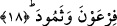

ORDULARIN HABERİ
SANA GELDİ Mİ?
17. Orduların haberi sana geldi mi?
18. Firavun ve Semûd’un (uğradıkları felâketin haberi)
19. Doğrusu inkârcılar (gerçeği) yalanlayıp dururlar.
20. Allah onları arkalarından kuşatmıştır.
21. Hakikatte o (yalanladıkları) şerefli Kur’an’dır.
22. (Aslı) levh-i mahfuzda bulunmaktadır.
Yani “orduların kıssası sana geldi” demektir. Çünkü buradaki soru bir şeyi öğrenmek
için değil, bir hakikati vurgulamak içindir. Ordulardan maksad ise peygamberlere karşı
geçmişte silahlanıp bir araya gelen kâfirler topluluğudur. Bunların haberleri demek
geçmişte küfür ve sapıklıkta devam etmeleri ve bundan dolayı başlarına gelen azap ve
başkalarına ibret verici olarak uğradıkları belâ demektir.
18. Firavun ve Semûd’un (uğradıkları felâketin haberi)
Bu iki kelime yukarda geçen ve ordular anlamına gelen “el-cünûd” kelimesinden
bedeldir. Ancak el-cünûd çoğul, Fir’avn ve Semud ise tekil isimlerdir. Dolayısıyla
bedel olan kelime ile bedel alınan isim zâhiren teklik ve çokluk açısından birbirine
uygun değildir. Buna rağmen bu iki isim bedeldir. Çünkü Fir’avn’dan maksad sâdece
Fir’avn değil, bilakis kendisi ve kavmidir. Burayı kelimenin başındaki muzafın
hazfedilmesi kabilinden almak da mümkündür. Bu takdirde mânâ Fir’avn’ın değil de
“Fir’avn’ın ordusunun” şeklinde olur. Bu açıklamalardan sonra âyete şöyle mânâ
verebiliriz: Sana onların haberleri geldi mi? Onların yaptıkları yalanlamayı ve buna
karşılık başlarına gelen azabı öğrendin mi? O halde sen kavmine Allah’ın onlara yaptığı
şeyleri hatırlat. Bu insanların ve benzerlerinin başlarına gelen musîbeti kavmine
hatırlat. Gerçekten onlar Fir’avn kıssasını ve Hz. Mûsâ’nın kavmi olan Fir’avn